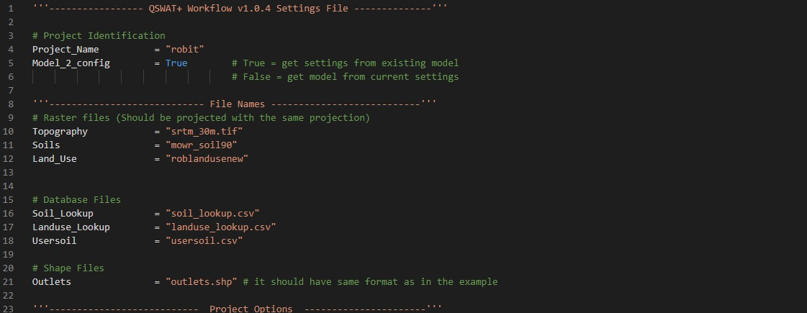

The configuration information for setting up the model is in a settings file called
‘config.py’. Users can open and make changes to this file in any text file editor
such as Notepad, Notepad++ and Visual Studio Code (recommended)
.
Go download the example_dataset.zip
file to view an example of a filed config file.
The following is a description of each section and how to fill it.
Project identification
This section identifies the name and type of the project (Figure 2). The project
name should be filled on Project_Name. Model_2_config option identifies what type of
project it is. If the SWAT model was set up in the QSWAT+ and SWAT+ Editor GUIs and
the user wants to retrieve a config and dataset that will reproduce that model, the
Model_2_config option should be set to True. To go from config and data to a SWAT+
model, set this option to False.
File names
In this section, all files that are to be used in the model setup are listed. This
includes the names of the soil, land use and DEM raster files present in rasters
directory (Figure 1). Note that file names should include file extensions if rasters
are
not in grid (commonly used with ArcGIS) format, as shown in Figure 2.
Lookup files contain the soil type or land use classes represented by the values in
the
soil and land use raster files. The lookup files are contained in the tables’
directory
(Figure 1) and should be listed in the Soil_Lookup and Landuse_Lookup
lines for soil
lookup file and land use lookup file respectively.

Figure 2: Project identification and file names sections
in config.py
Database table file for soil properties (usersoil file) should be specified in the
on the Usersoil variable as demonstrated in Figure 2. You should also list
the name of the file that contains locations where outlets should be created within
the model in the Outlet line under Shape Files section.
Project Options
For watershed delineation, you need to specify the channel and stream delineation
thresholds using the Channel_Threshold and Stream_Threshold variables
respectively.
The maximum distance for snapping outlets to streams should also be entered in
metres in the OUT_Snap_Threshold line under the Watershed Delineation
section
(Figure 3).
Figure 3: Project options section in config.py
HRU Definition
The HRU Definition section offers options to be used for creating HRUs. Slope
classes for model setup can be specified in the Slope_Classes variable.
Separate the
slope demarcation values by commas as shown in Figure 3.
You can specify one of different HRU_Filter_Method values (1 through 5) that
are
also available in the QSWAT+ GUI. For more information on how they work, refer to
QSWAT+
guide. The HRU creation methods are listed in Table 1:
Table 1: Available HRU creation options
| Number |
Method |
| 1 |
Dominant land use, soil, slope |
| 2 |
Dominant HRU |
| 3 |
Filter by Area |
| 4 |
Target Number of HRUs |
| 5 |
Filter by land use, soil, slope |
If HRU c reation method 4 is selected, Target_value line should be set to a
value.
The QSWAT Workflow will create the number of HRUs specified in the
Target_value
line.
If method 5 is selected, the user should also specify the threshold for land use,
soil and slope in Land_Soil_Slope_Thres as demonstrated in Figure 3.
If method 3 or 5 is selected, set HRU_Thresholds_Type to either 1 or 2 to
interpret
threshold values as areas (hectares) or per cent of landscape units respectively.
Note that if method 3 is selected, Target_Area will be used as the area
threshold.
Routing, ET calculation method and Infiltration options can be filled as shown in
Figure 4 with reference to options presented in Table 2.
Table 2: Routing Options, ET calculation method and
Infiltration options
| Setting |
Option |
| ET_method |
1 = Priestley-Taylor
2 = Penman-Monteith
3 = Hargreaves
|
| Routing_Method |
1 = Muskingum
2 = Variable Storage
|
| Routing_Timestep |
1 = Daily Rainfall/routing, curve number
2 = Sub-daily Rainfall/routing, Green & Ampt
|